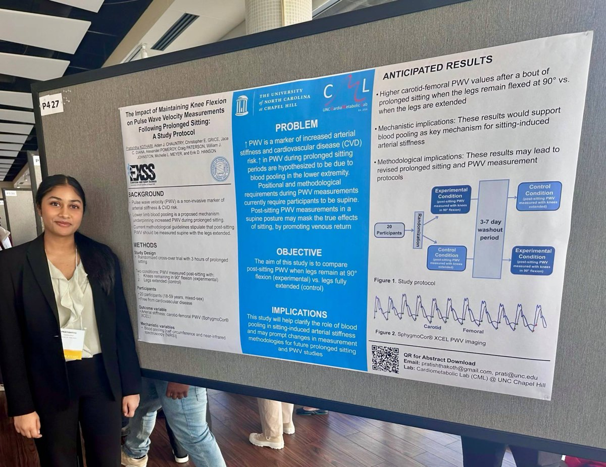
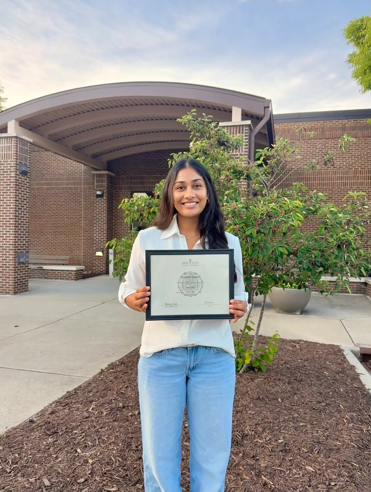
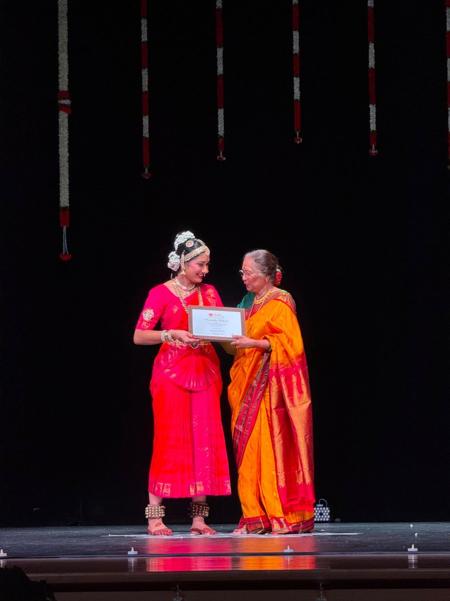

In high school I participated in the Medical Innovation contest through HOSA, where I was exposed to smart menstrual pad technology, which used menstrual blood biomarkers to rapidly test for cervical cancer. This technology made me realize that menstrual blood could reveal information about a person's health through analyzing the endometrium. This sparked my broader interest in reproductive health. I am particularly interested in understanding how we can use biological information as tools that are often overlooked such as improved prevention and diagnosis.
In many aspects, reproductive and menstrual health are not prioritized. Specifically, [Placeholder: statistics showing how reproductive health is underfunded / inaccessible on campus, with citation]. This semester, after speaking to student organizations that were distributing menstrual products on campus, I learned of the limited accessibility to basic feminine products in my own community.

In addition to reproductive health, my cousin's birth exposed me to maternal and child health, specifically neonatal care. During her birth, a problem with the umbilical cord restricted the oxygen from reaching the brain, causing cerebral palsy. Growing up with her, I watched her milk monitor, went to physical therapy with her, and challenged her with mathematical games. These experiences prompted me to wonder how an oxygen deprivation lasting 6 minutes at birth can produce lifelong changes in neurological development. At UNC, I hope to explore these questions through neuroscience and research involving reproductive, maternal, and fetal medicine.

My interest in medicine became personal through obtaining the Nursing Assistant Certification and my experiences working directly with Alzheimer's and dementia patients. Working in patient-care environments gave me a glimpse into the variability of healthcare. I noticed that the care differentiated between the amount of time I took to listen, communicate, and make them feel comfortable during moments of vulnerability. Learning that brief interactions, such as a greeting, changed the quality of care, made me appreciate that medicine is more than scientific knowledge. Rather, medicine relies heavily on trust and relationships.
This was a turning point in my interest to pursue medicine because it informed me about problem-solving with both knowledge and care.

Another significant part of my life has been Bharatanatyam: an Indian classical dance I have trained in for 13 years. Dance has taught me to be patient with learning, by experiencing slow and nonlinear forms of growth. Fostering patience also developed discipline because Bharatanatyam has a strong set of traditions and rules to practice by.